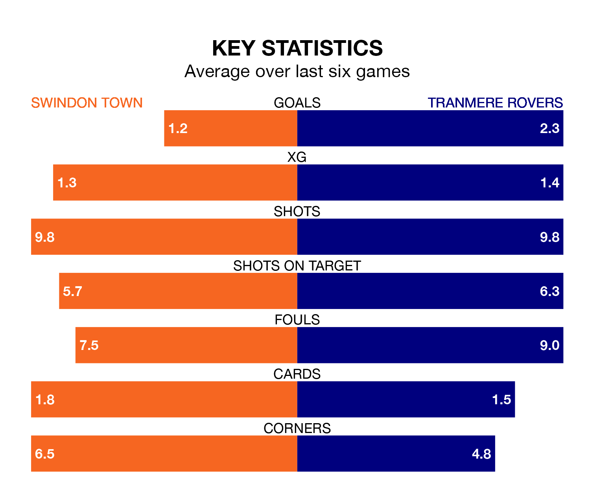

Swindon Town are on a poor run ahead of hosting Tranmere Rovers at the County Ground on Saturday, with just four points collected from their last six games.
The Robins have picked up one win and one draw in their last six EFL League Two games, and face a Tranmere side whose last six games have brought four wins and two losses.
With 50 goals in 28 games so far this season, Swindon are scoring more than average in the league with 1.8 goals per game. But they are conceding more than average too, letting in 54 goals at a rate of 1.9 per game.
Tranmere, meanwhile, are average scorers, with 1.5 goals per game. They have also conceded 1.5 goals per game.
In Jake Young, Town have one of the league's most on-form strikers so far this season. He has notched 16 goals in 25 appearances, to sit second in the scoring charts.
His goal rate of one every 123 minutes is much quicker than that of Conner Jennings, Rovers' top scorer with a goal every 263 minutes, and a total of nine goals in 27 games.
In the last 10 years, Swindon and Tranmere have played each other on eight occasions. They won three each, and they drew twice.
On average, the Robins scored 1.1 goals and Tranmere 1.4 in those matches.
Their last meeting was on December 23, when Tranmere won 2-1 at home.
The visitors are 18th in the table after 28 games, of which they have won 10 and drawn three, earning 33 points.
The Robins are two places ahead of Tranmere in 16th, with nine wins and seven draws putting them on 34 points.
Swindon's last match was on January 13, a 2-1 loss against Crewe Alexandra, with Charlie Austin getting the goal for the Robins.
Tranmere lost 2-1 against Milton Keynes Dons last time out, also on January 13, with Kieron Morris on the scoresheet.
Updated: 13:09 (UTC), 17/01/24